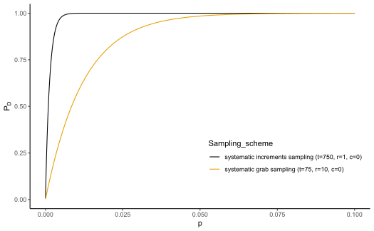
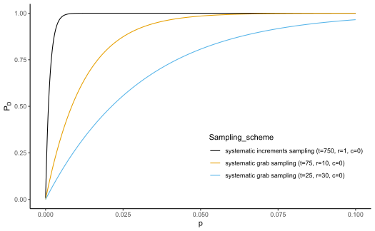
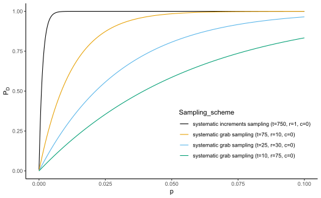
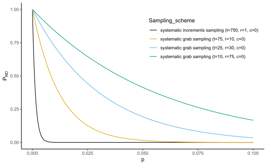

R/compare_plans.R
compare_plans.RdThis function allows comparison of different sampling schemes, which can be systematic and random sampling of primary increments or grab sampling of blocks of primary increments. A graphical display of the probability of detection \(P_D\) or probability of non detection \(P_{ND}\) versus fraction nonconforming \(p\) for up to four selected schemes will be produced.
compare_plans(d, N, plim, type, c1, r1, t1, method1, c2, r2, t2, method2,
c3, r3, t3, method3, c4, r4, t4, method4,linetype)serial correlation of contamination between the primary increments
length of the production
the upper limit for graphing the fraction nonconforming or proportion of contaminated increments
what type of graph we want to produce such as D or ND. compare_plans produces a graphical display of \(P_D\) or \(P_{ND}\) versus \(p\) depending on the D or ND of type
acceptance numbers
number of primary increments in a grab sample or grab sample size
number of grab samples
what sampling method we have applied such as 'systematic' or 'random' selection methods
if we want to get a different type of line for each sampling scheme, set it to FALSE otherwise graph will be produced with the same type of line (default TRUE)
Probability of detection or non detection vs limiting fraction curves
c1 <- 0
c2 <- 0
c3 <- 0
c4 <- 0
r1 <- 1
r2 <- 10
r3 <- 30
r4 <- 75
t1 <- 750
t2 <- 75
t3 <- 25
t4 <- 10
d <- 0.99
N <- 1e9
method1 <- method2 <- method3 <- method4 <- 'systematic'
plim <- 0.10
compare_plans(d, N, plim, type ='D', c1, r1, t1, method1, c2, r2, t2, method2)

compare_plans(d, N, plim, type ='D', c1, r1, t1, method1, c2, r2, t2, method2,
c3, r3, t3, method3)

compare_plans(d, N, plim, type ='D', c1, r1, t1, method1, c2, r2, t2, method2,
c3, r3, t3, method3, c4, r4, t4, method4)

compare_plans(d, N, plim, type ='ND', c1, r1, t1, method1, c2, r2, t2, method2,
c3, r3, t3, method3, c4, r4, t4, method4)
